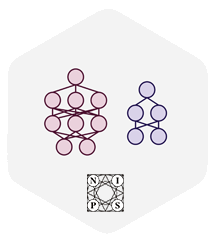
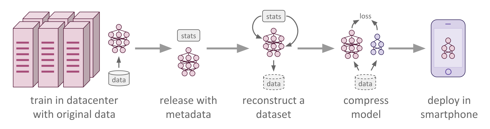

Data-Free Knowledge Distillation for Deep Neural Networks
Undergraduate research on data-free model compression.
Poster presented at ML@GT Spring 2017 Symposium.
Paper presented at NIPS 2017 LLD Workshop.
Under review at AISTATS 2018.
Pre-print on arxiv now!
Source code available right now!
Poster presented at ML@GT Spring 2017 Symposium.
Paper presented at NIPS 2017 LLD Workshop.
Under review at AISTATS 2018.
Pre-print on arxiv now!
Source code available right now!
ABSTRACT
Recent advances in model compression have provided
procedures for compressing large neural networks to a
fraction of their original size while retaining most if
not all of their accuracy. However, all of these
approaches rely on access to the original training set,
which might not always be possible if the network to be
compressed was trained on a very large non-public
dataset. In this work, we present a method for data-free
knowledge distillation, which is able to compress deep
models to a fraction of their size leveraging only some
extra metadata to be provided with a pretrained model
release. We also explore different kinds of metadata that
can be used with our method, and discuss tradeoffs
involved in using each of them.
